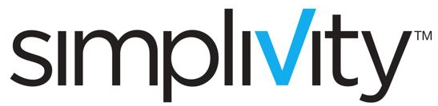
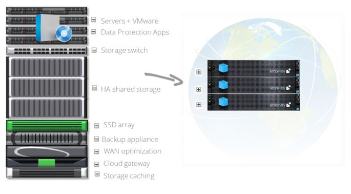

Get Hyperconverged with

and


What Is Hyperconverged?
In the traditional Data Centre model dedicated components provide highly specialised functions such as storage,
networking, backup, compute and compression. With converged infrastructure some of these components are
placed into a single box, typically the compute, networking and storage. With hyper-converged
all of the components are combined into a single small device. For more capacity, you add more
nodes to the cluster. This is a similar model to the Web-Scale approach taken by large Internet companies such
as Amazon or Google.

What is SimpliVity?
Simply put, SimpliVity is a Data Centre in a box. It is a single device (only 2RU in size) that
contains everything that you need to run your applications and infrastructure. If you need more
capacity simply add another SimpliVity OmniCube.
But that is only the beginning. SimpliVity provides advanced data management functions such as
de-duplication and compression, automated timed backups and blisteringly fast VMWare copies. By compressing
and de-duplicating the data the first time it is seen, SimpliVity dramatically reduces the disk space
requirements while at the same time improving performance. In fact more than 20% of SimpliVity customers
get better than 100:1 compression ratios. This not only allows you to store more data before you need
to expand but more importantly by reducing the physical IO it improves the performance.
The best IO is the one you don't need to have.
Avoiding IO greatly improves performance.
Eight Common Infrastructure Problems Solved
Click on the problem to see how you can solve it.
- You’ve been chasing your storage engineers for 6 weeks to provision a new LUN so you can run up some VMs.
Lead Time for Storage
Storage is complicated and needs specialised storage engineers to provision new LUNs or extend storage. Storage considerations
need to be at the forefront of project manager's minds as lead times on storage can have a massive impact on project deadlines. Operations managers and service owners
need to be constantly aware of their growth patterns so they can give plenty of warning to the storage teams when increases are needed.
Solution
With SimpliVity a VMWare Adminstrator can add their own storage. In seconds. That's it.
- Replication to and from your branch office is hammering your WAN link and your remote backups never complete.
Branch Office Replication
Replicating data from a remote office back to the central or regional hub takes time. Network compression tools can assist with this but need to be tuned and monitored.
It is often not possibly to complete a remote copy within the window available and partial solutions such as replicating specific directories or files is the only
option. If weekend replication is possible then at least you can get a full copy once a week if you are lucky.
Solution
De-dupe and compression means that only new blocks are copied over the WAN. Even .PST files aren't a problem. Super fast. Super easy. No configuration.
- Disaster recovery testing is almost as bad as the disaster itself and you don’t really know if it is going to work like it should.
Business Continuity Testing
IT infrastructure is complicated. In order to do a proper test for an application or a system you need significant downtime. Failing all of the components
across to the disaster recovery facility is a major task with networks, storage, VMs, compute systems and who knows what else all needing to be in sync. Forget
anything more than basic testing as you need all the time and a good amount of luck to get the systems failed back over to production in the window available.
There is no chance you can do a single application at a time even in a true disaster scenario, everything is interconnected and complex. Not you? Everything works perfectly
in your world? Well have you ever tested everything in a BCP window? What about your backups and restores?
Solution
Pick a VM. Copy it to the remote site if it isn't already there (in seconds). Start it up.
- Your VDI solution runs on high-end systems and storage and costs more than just buying really high spec laptops.
VDI (Virtual Desktop Interface)
Desktop PCs are cheap to buy but expensive to manage. You'd love to use a VDI solution for some of your users but the costs don't add up. You can do it on
cheap disk with a cheaper solution but it still doesn't come in at less than real desktops and doesn't address any of your problems with the desktop environment
such as backup of PCs, or better control of the environment. It's good enough for a remote access solution but not much else. You can also do it on your high end
systems which give you the benefits you need but running this on tier 1 or even tier 2 storage makes it uneconomical.
Solution
De-dupe is especially good for VDI. SimpliVity is a very cost effective solution.
- Scaling up capacity should be easy, but it’s almost as hard as building a new system all over again.
Incremental Scaling
Adding capacity to your Data Centre is a major event. You can't scale in small units, it is major steps each time. Any proposal to add capacity to
your Data Centre has more zeros in it than a drunk Scotsman at a synchronised swimming event. You dread asking for the increases in capacity that you
need because someone is sure to make you spend a month costing it against the Cloud.
Solution
Add capacity in 2RU units. Only need compute and not storage? Easy, you can connect non-SimpliVity devices to your SimpliVity cluster.
- Backups have a high failure rate or are still running from overnight and have to be killed before start of day
Backup Windows Are Looooong
Forget backing up remote offices, you struggle to backup your critical systems in the Data Centre. Backups take time. Some applications have a backup
window that is over 24 hours and the operators kill the previous day's backup so today's can run. Thankfully backups don't attract a lot of attention
and aren't part of your KPI's. At least not until a restore is required.
Solution
Snapshots however often you need them. Every minute if you like. Fast restores, even to another Data Centre.
- You’d love to be able to vMotion one or two VMs, but you have to move everything on the LUN.
vMotion Across Different Geographies
Your BCP plan says that your Melbourne Data Centre will take over from Sydney in the event of a problem. That is fine for major outages (well you think it is,
you've never had to do it). For smaller problems you have no workable solution. In order to vMotion a VM from Sydney to Melbourne you need the LUNs failed over.
That impacts all applications, what if you only have one failing blade that you want to move the capacity off? You'd like to be able to vMotion the VMs from
that blade across to Melbourne but you can't. You'll need to arrange an outage and do it slowly.
Solution
With SimpliVity the data is already at the other site or if it's not you can move it very quickly. You are only vMotioning the memory.
- Any new solution means another interface and more tools to learn, nothing new actually reduces your workload.
New Technology = New Tools
Okay, so you want to put in a new technology. You can see all of the benefits it will bring but you are acutely aware of the downsides too. Your engineers
will need to learn a new set of tools, your monitoring will need to be completely upgraded and now instead of 12 tools to do the job you will have 13 or 14.
Solution
SimpliVity has no UI, it just bolts in to vCenter. Right click and you are away.
At 17 Ways, we believe that converged and hyper-converged technologies are the best options on which to run core corporate IT systems. While there has been a rush to market
in recent years in the hyper-converged space, SimpliVity have taken their time to fully develop the product before launch. We believe that SimpliVity have the best hyper-converged
system available today, suitable as a virtualisation platform for many use cases. 17 Ways are pleased to be a reseller and SimpliVity partner.
 Download SimpliVity and 17 Ways Factsheet
Download SimpliVity and 17 Ways Factsheet